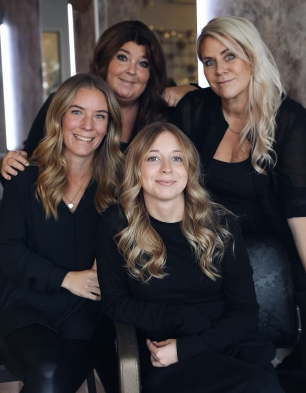
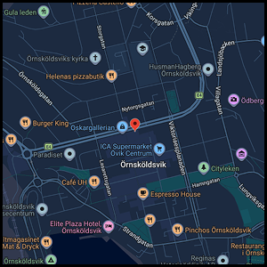
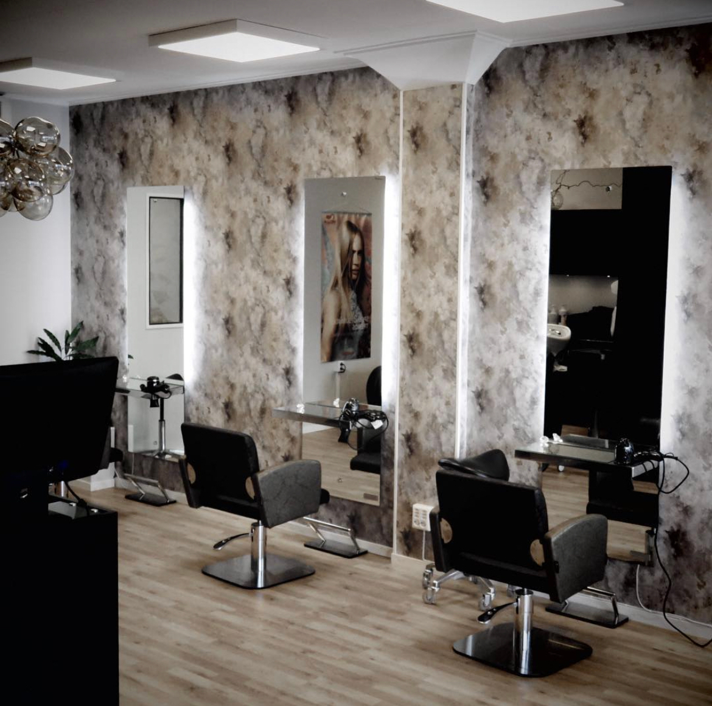
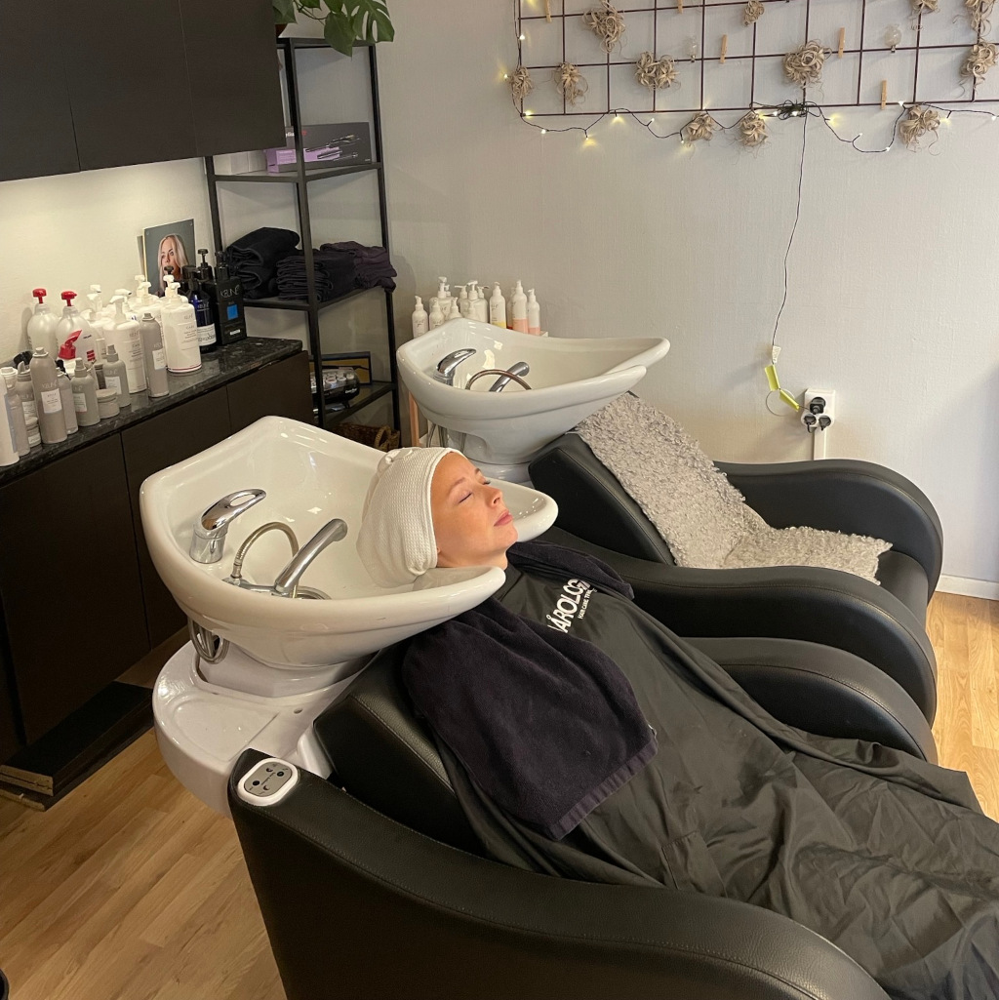
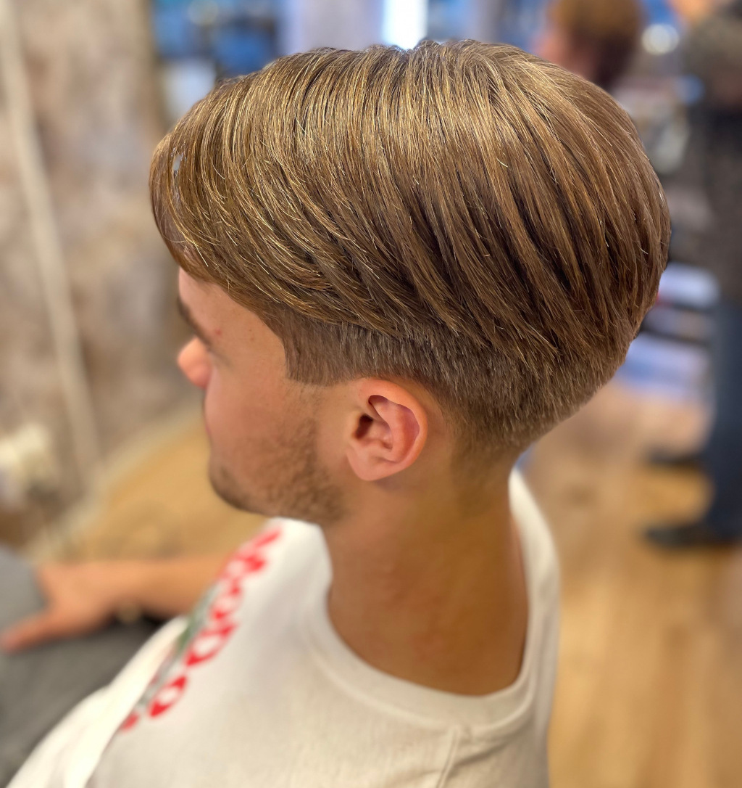
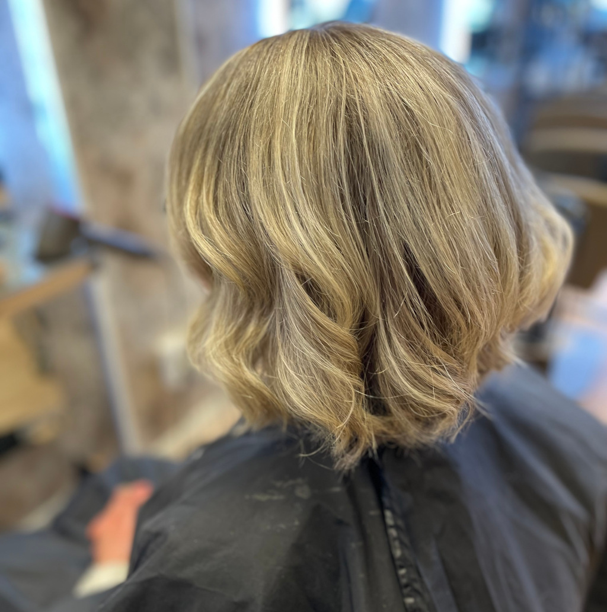

No 15 - Din nya salong i Ö-Vik
Välkommen in till oss i vår nya fräscha lokal på Centralesplanaden. Frisörerna på No 15 erbjuder dig en härlig stund med avkoppling och professionell behandling.
Att ständigt vara nyfiken på kommande mode och de senaste teknikerna ger oss alla möjligheter att ge dig ett fulländat resultat.
Vi hälsar dig varmt välkommen in.
Drop in och tidsbokning
Måndag 9.00–19.00
Tisdag–Torsdag 9.00–17.00
Lördag 10.00–15.00 (varannan lörd)
Söndag Stängt






Bra frisörer ger dig professionell hårvård
Frisörsök är en tjänst av bransch- och arbetsgivarorganisationen Frisörföretagarna. Hos Frisörsök hittar du alla anslutna salonger som uppfyller organisationens medlemskrav på yrkesbevis och seriöst företagande. Alla salonger i Frisörsök är godkända av Frisörföretagarna. Frisörerna som finns här innehar godkänd F-skattsedel och ett godkänt kassaregister. På frisörens personliga licens kan du se vilken behörighet den har. Med 4500 medlemmar är Sveriges Frisörföretagare landets största frisörnätverk som arbetar för en seriös och hållbar frisörbransch gentemot politiker och beslutsfattare. Det ska vara tryggt att välja frisör.
Visste du att:
För att bli behörig frisör krävs det i snitt tre års utbildning och minst 2000 dokumenterade arbetstimmar innan du kan avlägga gesällprov för att få gesällbrevet som yrkesbevis. I Sverige finns det idag inga krav eller kontroller på den som utövar frisöryrket, till skillnad från många EU-länder som kräver någon form av licens, utbildningsbevis eller tillstånd för att driva en salong. År 2016 tog därför Frisörernas Yrkesnämnd fram en svensk licens med målsättningen att uppnå krav på licens för att få kalla sig frisör, ett arbete som fortfarande pågår. Frisörlicensen är en kvalitetsgaranti som intygar utbildning, behörighet och seriositet. Detta för att du som kund ska känna dig trygg när du klipper eller färgar ditt hår. Fråga om din frisör har licens.